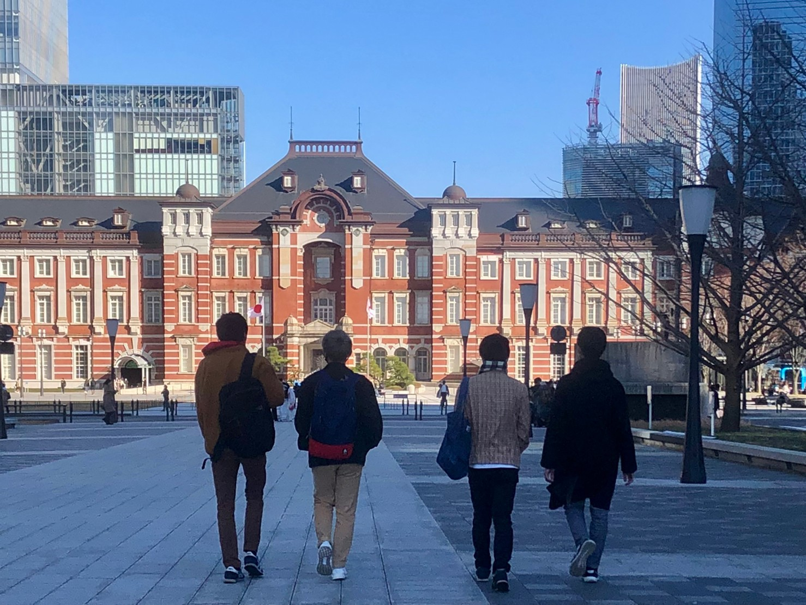
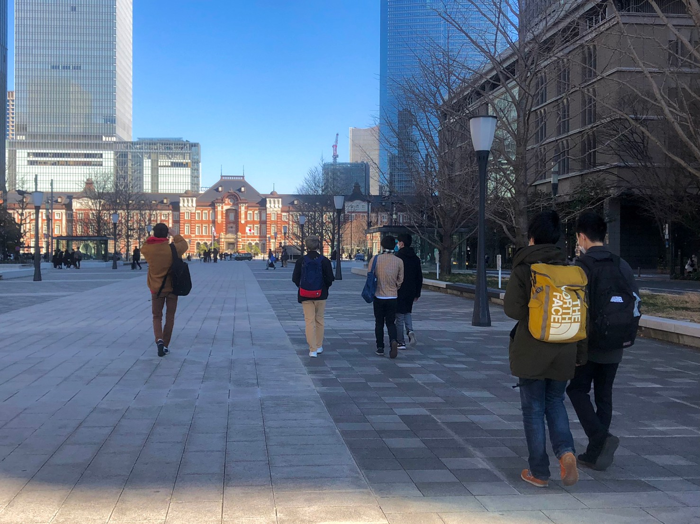
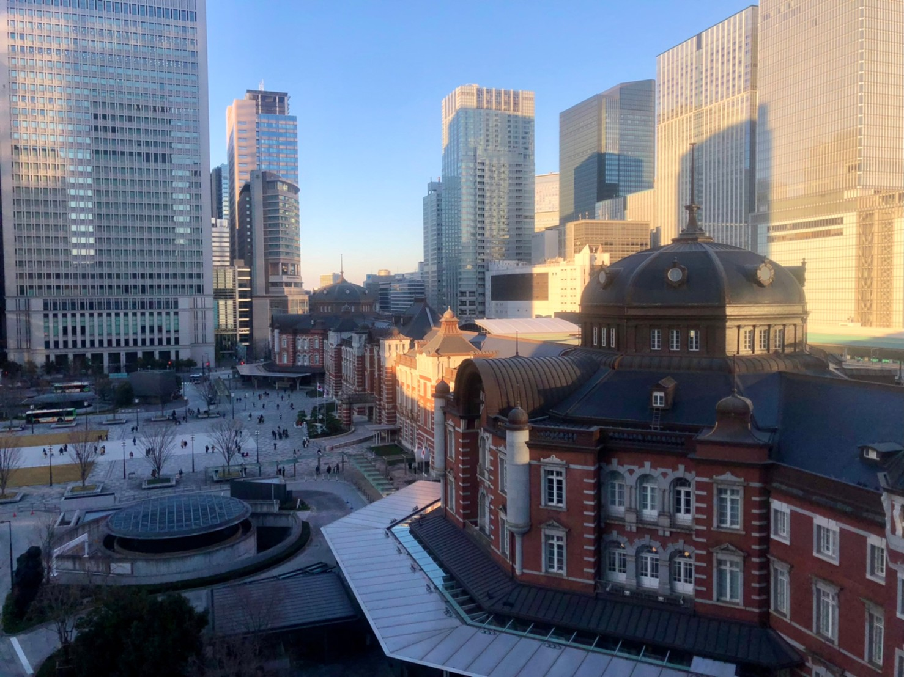

明治神宮外苑散歩
～イチョウ並木～
02/27 2022
カテゴリー：通常散歩
新年一発目（2022年）の散歩活動は新体制の運営が本格的に開始しました。2021年は当時4年の代表が散歩企画を中心にしておりましたが、2022年からは新3年生チームが中心に企画運営してくださいました！
春休み期間ということもあり、少人数メンバーでの散歩になりました。この程度のメンバーでの散歩だとのんびり出来ていいかもしれませんね。。。
皇居ランナーを初め、観光客やサイクリングされている方々、それとワクチンの大規模接種会場へ向かう人々など、オフィス街として名高い丸の内ですが、休日でも数多くの人々がいらっしゃいました。

千鳥ヶ淵や日本武道館、警視庁など皇居周辺をぐるっと歩いていい運動＆リフレッシュになりました。
最後に東京駅近くにある商業施設”KITTE”の屋上へ行きました。夜になったら夜景が綺麗に見えるので機会があったら東京の夜景を楽しみたいと思った今日この頃でした。
前の記事 →